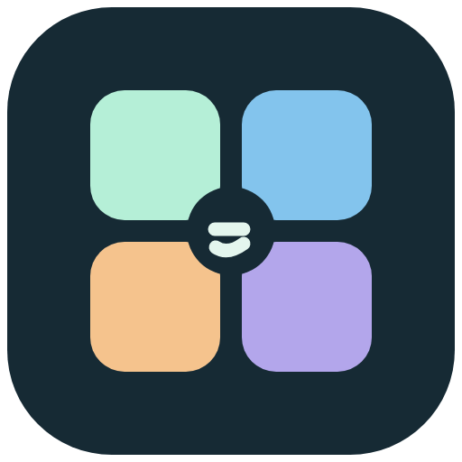

easy API平台
easy API平台多模型 AI 工作台
聊天、工作与创作，九种模式在一个空间衔接。
了解产品 easy API平台把零散的资料，整理成清晰的下一步。
easy API平台 / Work# A small beginning
def hello(name):
return f"Hello, {name}"
print(hello("easy")) easy Code
easy Code任务、权限与进度，始终看得见。
界面示意，不会调用模型或执行操作。
你的模型。你的电脑。你的工作方式。
THE EASY FAMILY
不必一次装下全部。
从眼前的一件事，选一个适合你的开始。
easy API平台聊天、工作与创作，九种模式在一个空间衔接。
了解产品 easy API平台easy Code多对话管理、项目文件编辑与命令执行，支持多 API 团队协作。
了解产品 easy Code Otti
Otti在授权范围内完成网页与文件任务，把控制权留给你。
了解产品 Otti easy Browser
easy BrowserChromium 浏览器、广告过滤、网页 AI 助手与游戏全屏。
了解产品 easy Browser多语言编辑与运行、AI 项目助手，以及离线图形化创作。
了解产品 easy Dev easy Claw
easy Claw基于 OpenClaw 的本机工作台，管理网关、模型与工作目录。
了解产品 easy Claw easy WPS
easy WPS查看和简易编辑文档、表格、演示、PDF 与图片，另存副本。
了解产品 easy WPS easy Cut
easy Cut裁剪、拼接、倍速与音量调整，使用 FFmpeg 导出 MP4。
了解产品 easy Cut easy Games
easy Games离线小游戏、原创 3D、房间联机与 API 对战。
了解产品 easy Games easy Pet
easy PetAI 二创角色养成、图鉴收集、桌面漫步与 API 聊天。
了解产品 easy Pet easy Music
easy Music打开本地音乐与视频，管理播放列表，不需要模型 API。
了解产品 easy Music easy AI friend
easy AI friend自定义伙伴的名字、提示词和头像，对话保存在本机。
了解产品 easy AI friend
easy All偏爱统一入口？认识十款应用的整合工作台。了解整合版测试层占 25%（向上取整），其余为工作层。模型审查不等于真实运行测试。
FROM THOUGHT TO SOMETHING REAL
写下，整理，剪辑。
让日常创作，少一点繁琐。
以上为功能示意。两款应用均在本机处理文件，不需要模型 API。
MADE FOR YOUR DESKTOP
连接自己的 API。兼容性、用量与费用以所选服务为准，不绑定单一模型。
桌面工作目录与本地工具衔接。使用在线 AI 时，提交的内容会发送给你选择的模型服务。
按应用设置工作目录、网站与批准方式。查看操作内容，重要任务先验证结果。
MAKE IT YOURS
选择独立应用，或 easy All 统一工作台。
默认安装到 D 盘，可自行更改。
同一窗口切换 AI、开发、浏览与生活工具。
此版本包含原十款模块，不含新增的 easy WPS 与 easy Cut。多模型 AI 工作台
把想法写成代码
你的私人桌面助理
为好奇心打开窗口
从代码，到积木创作
让智能体连接工具
轻量处理日常文档
让片段，成为作品
给日常一点游戏时间
多一个桌面小伙伴
听见自己的节奏
让对话，有自己的名字
没有找到匹配的应用，请试试其他关键词。
GitHub Releases
A FEW GOOD QUESTIONS
easy 是一组独立开发的桌面应用，不提供自有基础模型。需要 AI 的功能使用你自行配置的模型 API；浏览、音乐、基础文档和视频工具可不使用 AI。
AI 功能需要你提供兼容服务的 API 地址、模型与 API Key。模型费用由对应服务商计收，具体能力取决于模型与接口。多款应用支持读取 easy API平台的设置。
easy All 1.0.0 是原十款模块的整合快照。新增的 easy WPS、easy Cut，以及之后的独立版更新不代表已同步进入整合版。请查看版本说明，按需要选择独立版。
easy All 支持 Windows 10 及以上 64 位。独立应用的系统要求以产品页为准；easy Games 有 Windows 7 兼容设计。本页没有提供 macOS 安装包。
下载按钮连接 GitHub Releases。你可以在那里核对版本说明，也可使用本站的 SHA-256 校验文件检查安装包。若下载失败，请稍后重试或直接访问发布页。